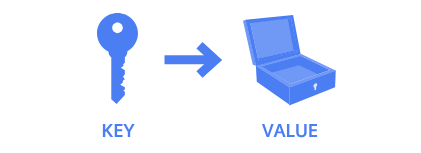
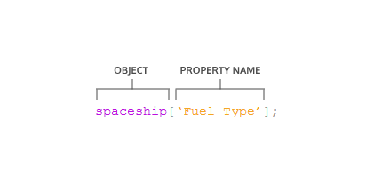

Objekte
JavaScript kennt nur acht fundamentale Datentypen, von denen sieben "primitive" Typen sind: string, number, boolean, null, undefined, symbol und bigint. Der achte Typ, Objekte, eröffnet komplexere Möglichkeiten. JavaScript - Objekte können verwendet werden, um reale Dinge zu modellieren, z.B. einen Basketball, oder um Datenstrukturen zu erstellen, die das Web ermöglichen.
Im Kern sind JavaScript - Objekte Container, die zusammengehörige Daten und Funktionalitäten speichern. Diese scheinbar einfache Aufgabe ist in der Praxis äusserst mächtig. Objekte wurden schon die ganze Zeit verwendet, nun ist es an der Zeit, ihre Mechanik zu verstehen und eigene zu erstellen!
Erstellen von Objekt-Literalen
Objekte können Variablen zugewiesen werden, genauso wie jedem anderen JavaScript-Typ. Geschweifte Klammern {} werden verwendet, um ein Objekt-Literal zu kennzeichnen:
let raumschiff = {}; // leeres ObjektEin Objekt wird mit ungeordneten Daten gefüllt. Diese Daten sind in Schlüssel-Wert-Paare organisiert. Ein Schlüssel ist wie ein Variablenname, der auf eine Speicherstelle verweist, die einen Wert hält.
Der Wert eines Schlüssels kann jeder Datentyp in der Sprache sein, einschliesslich Funktionen oder andere Objekte.
Ein Schlüssel-Wert-Paar wird erzeugt, indem der Name des Schlüssels (oder Identifikators) geschrieben wird, gefolgt von einem Doppelpunkt und dann dem Wert. Jedes Schlüssel-Wert-Paar in einem Objekt-Literal wird durch ein Komma getrennt, Schlüssel sind Strings, aber wenn ein Schlüssel keine Sonderzeichen enthält, dürfen die Anführungszeichen weggelassen werden:
let raumschiff = {
'Treibstoffart': 'Diesel',
farbe: 'silber'
};Zugriff auf Eigenschaften
Es gibt zweiMöglichkeiten, auf eine Eigenschaft eines Objekts zuzugreifen. Die erste Möglichkeit ist die Punktnotation (.).
Die Punktnotation wurde genutzt, um auf Eigenschaften und Methoden eingebauter Objekte und Dateninstanzen zuzugreifen:
'hello'.length; // Gibt 5 zurückMit der Punktnotation wird der Name des Objekts geschrieben, gefolgt vom Punktoperator und dann dem Eigenschaftsnamen (Schlüssel).:
let raumschiff = {
heimatsplanet: 'Erde',
farbe: 'silber'
};
raumschiff.heimatsplanet; // Gibt 'Erde' zurück
raumschiff.farbe; // Gibt 'silber' zurückWenn versucht wird, auf eine nicht vorhandene Eigenschaft zuzugreifen, wird undefined zurückgegeben.
raumschiff.lieblingsEis; // Gibt undefined zurückKlammernotation
Die zweite Möglichkeit, auf den Wert eines Schlüssels zuzugreifen, ist die Klammernotation ([]).
Klammernotation wurde bereits beim Indizieren von Arrays verwendet:
['A', 'B', 'C'][0]; // Gibt 'A' zurückUm die Klammernotation bei Objekten zu nutzen, wird der Schlüsselname als String in eckige Klammern gesetzt.
Die Klammernotation ist notwendig, wenn Schlüssel keine gültigen Bezeichner sind (z.B. Schlüssel, die mit einer Zahl beginnen oder Leerzeichen/Sonderzeichen enthalten).
Ohne Klammernotation würden solche Fälle einen Fehler verursachen.
let raumschiff = {
'Treibstoffart': 'Turbo Treibstoff',
'Aktiv Dienst': true,
heimatsplanet: 'Erde',
mitgliederzahl: 5
};
raumschiff['Aktiv Dienst']; // Gibt true zurück
raumschiff['Treibstoffart']; // Gibt 'Turbo Treibstoff' zurück
raumschiff['mitgliederzahl']; // Gibt 5 zurück
raumschiff['!!!!!!!!!!!']; // Gibt undefined zurückIn der Klammernotation kann auch eine Variable verwendet werden, um den Schlüssel eines objekts auszuwählen. Dies ist besonder nützlich bei Funktionen:
let returnAnyProp = (objektName, propName) => objektName[propName];
returnAnyProp(raumschiff, 'heimatsplanet'); // Gibt 'Erde' zurückWenn Punktnotation anstelle von Klammernotation verwendet würde (objektName.propName), würde der Computer nach einem Schlüssel mit dem Namen 'propName' suchen, nicht dem Wert der Variable propName.
let spaceship = {
'Fuel Type' : 'Turbo Fuel',
'Active Mission' : true,
homePlanet : 'Earth',
numCrew: 5
};
let propName = 'Active Mission';
let isActive = spaceship['Active Mission'];
console.log(isActive);Eigenschaftszuweisung
Einaml definierte Objekte können nachträglich verändert werden. Objekte sind veränderbar (mutable), das bedeutet, Eigenschaften können nach der Erstellung geändert oder hinzugefügt werden.
Sowohl die Punkt- als auch die Klammernotation können zusammen mit dem Zuweisungsoperator = verwendet werden, um neue Schlüssel-Wert-Paare hinzuzufügen oder existierende Eigenschaften zu ändern.
Wenn die Eigenschaft bereits existiert, wird ihr vorheriger Wert durch den neuen ersetzt. Existiert die Eigenschaft noch nicht, wird sie neu hinzugefügt.
Obwohl Objekte, die mit const deklariert sind, nicht neu zugewiesen werden können, können ihre Eigenschaften verändert werden.
const raumschiff = {typ: 'Shuttle'};
raumschiff = {typ: 'Alien'}; // TypeError: Zuweisung an konstante Variable
raumschiff.typ = 'Alien'; // Ändert den Wert der Eigenschaft 'typ'
raumschiff.geschwindigkeit = 'Mach 5'; // Fügt eine neue Eigenschaft 'geschwindigkeit' hinzuEigenschaften können mit dem delete-Operator entfernt werden:
const raumschiff = {
'Treibstoffart': 'Turbo Treibstoff',
heimatsplanet: 'Erde',
mission: 'Erkunde das Universum'
};
delete raumschiff.mission; // Entfernt die Eigenschaft 'mission'Weiteres Beispiel:
let spaceship = {
'Fuel Type' : 'Turbo Fuel',
homePlanet : 'Earth',
color: 'silver',
'Secret Mission' : 'Discover life outside of Earth.'
};
// Write your code below
spaceship.color = 'glorious gold';
spaceship.numEngines = 8;
delete spaceship['Secret Mission'];Methoden
Wenn ein Wert einer Eigenschaft eine Funktion ist, nennt man diese Eigenschaft eine Methode. Eine Eigenschaft beschreibt, was ein Objekt hat, eine Methode beschreibt, was ein objekt tut.
Objekt-Methoden sind vertraut, da sie schon immer genutzt wurden, Beispielsweise ist console ein globales JavaScript-Objekt, und .log() ist eine Methode davon. Auch Math ist ein globales Objekt mit Methoden wie .floor().
Methoden können in Objekt-Literalen durch gewöhnliche, durch Doppelpunkte getrennte Schlüssel-Wert-Paare eingefügt werden, wobei der Schlüssel der Methodenname ist und der Wert ein anonymer Funktionsausdruck.
const alienRaumschiff = {
eindringen: function () {
console.log('Hallo! Wir sind gekommen, euren Planeten zu dominieren. Statt Erde soll er New Xaculon heißen.')
}
};Mit der neuen Methodensyntax ab ES6 können der Doppelpunkt und das funktion-Schlüsselwort weggelassen werden:
const alienRaumschiff = {
eindringen () {
console.log('Hallo! Wir sind gekommen, euren Planeten zu dominieren. Statt Erde soll er New Xaculon heißen.')
}
};Methoden werden durch Anhä$ngen des Objektnamens, eines Punkts, dem Methodennamen und Klammern aufgerufen:
alienRaumschiff.eindringen(); // Gibt die Nachricht ausBeispiel:
const alienShip = {
retreat () {
console.log(retreatMessage)
},
takeOff () {
console.log('Spim... Borp... Glix... Blastoff!')
}
};
alienShip.retreat();
alienShip.takeOff();
/*
Ausgabe:
We no longer wish to conquer your planet. It is full of dogs, which we do not care for.
Spim... Borp... Glix... Blastoff!
*/Verschachtelte Objekte
In Anwendungen sind Objekte oft verschachtelt - ein Objekt kann ein weiteres Objekt als Eigenschaft enthalten, das wiederum ein Array von noch mehr Objekten enthalten kann.
Im raumschiff-Objekt wird ein crew-Objekt benötigt, das alle Cre-Mitglieder enthält. Jedes Cre-Mitglies ist selbst ein Objekt mit Eigenschaften wie name und degree und hat eigene Methoden je nach Rolle.
Auch andere objekte können verschachtelt sein, wie ein telescope oder Details zum nanoelecronics-Objekt.
const raumschiff = {
telescope: {
baujahr: 2018,
modell: '91031-XLT',
brennweite: 2032
},
crew: {
kapitän: {
name: 'Sandra',
abschluss: 'Computertechnik',
teamMotivation() { console.log('Wir schaffen das!') }
}
},
motor: {
modell: 'Nimbus2000'
},
nanoelektronik: {
computer: {
terabytes: 100,
monitore: 'HD'
},
'backup': {
batterie: 'Lithium',
terabytes: 50
}
}
};Verschachtelte Eigenschaften können durch Verkettung von Operatoren erreicht werden:
raumschiff.nanoelektronik['backup'].batterie; // Gibt 'Lithium' zurückÜbergabe durch Referenz
Objekte werden durch Referenz übergeben. Das bedeutet, wenn ein Objekt in einer Funktion als Argument übergeben wird, zeigt der Parameter auf denselben Speicherort.
Änderungen an Eigenschaften eines Objekts in einer Funktion wirken sich dauerhaft auf das Objekt aus, auch wenn das Objekt mit const deklariert wurde
const raumschiff = {
heimatsplanet: 'Erde',
farbe: 'silber'
};
let lackieren = obj => {
obj.farbe = 'glänzendes Gold';
};
lackieren(raumschiff);
raumschiff.farbe; // Gibt 'glänzendes Gold' zurückEine Neue Zuweisung des objekts innerhalb einer Funktion funktioniert nicht:
let raumschiff = {
heimatsplanet: 'Erde',
farbe: 'rot'
};
let versucheNeuZuweisung = obj => {
obj = {
identifiziert: false,
'transporttyp': 'fliegend'
};
console.log(obj); // Gibt das neue Objekt aus
};
versucheNeuZuweisung(raumschiff); // Die Neue Zuweisung wirkt sich nicht aus
raumschiff; // Bleibt unverändertSchleifen durch Objekte
Schleifen sind Werkzeuge, um Codeblöcke wiederholt auszuführen. Arrays werden durch numerische Indizes durchlaufen, aber Schlüssel-Wert-Paare in Objekten sind ungeordnet.
JavaScript bietet mit der for...in-Schleife eine Lösung, um durch Eigenschaften eins Objekts zu iterieren.
for (let mitglied in raumschiff.crew) {
console.log(`${mitglied}: ${raumschiff.crew[mitglied].name}`);
}Die for...in-Schleife iteriert durch alle Eigenschaften eines Objekts. In jeder Iteration wird eine Variable auf den aktuellen Schlüssel gesetzt, um auf die entsprechende Eigenschaft zuzugreifen.
Beispiel:
for (let rolle in raumschiff.besatzung) {
console.log(`${rolle}: ${raumschiff.besatzung[rolle].name}`);
}Zusammenfassung
- Objekte speichern Sammlungen von Schlüssel-Wert-Paaren.
- Eigenschaften sind Schlüssel-Wert-Paare, Methoden sind Eigenschaften mit Funktionen
- Objekt-Literale bestehen aus kommagetrennten Schlüssel-Wert-Paaren in geschweiften Klammern.
- Zugriff, Hinzufügen und Ändern von Eigenschaften mit Punkt- oder Klammer-Notation.
- Methoden können als anonyme Funktionen oder mit ES6-Syntax definiert werden.
- Verschachtelte Objekte können durch Verkettung von Operatoren navigiert werden.
- Objekte sind veränderbar (mutable), auch wenn mit const deklariert.
- Objekte werden per Referenz übergeben, Änderungen innerhalb von Funktionen sind dauerhaft.
- Iteration über Objekte mit for...in möglich.